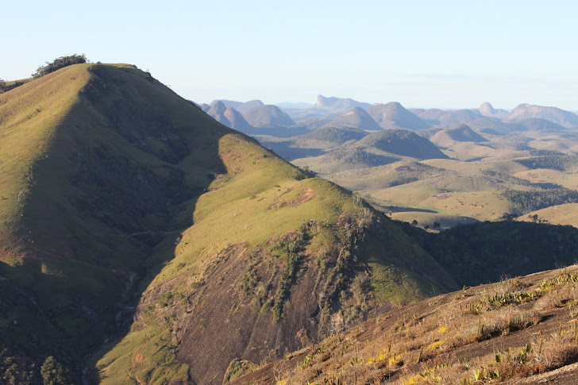

O município de Ataléia
Postado por Samuel em
 Região de Ataléia-MG. (Imagem: Renato A. Teixeira).A construção das primeiras casas do povoado foi impulsionada pela atividade do garimpo. Os primeiros fazendeiros que chegaram com o objetivo de cultivar as terras devolutas da região também contribuíram, pois fixaram residência nas vizinhanças. Os poaieiros que percorriam a região em busca da planta medicinal conhecida pelo nome de poaia, encontrada nas matas fechadas da região, também concorreram para o povoamente. O tropeiro Antonio Lemos que vendia víveres e demais produtos a esses trabalhadores, juntamente com Vicente Pedroso que já se achava estabelecido no local onde hoje está erguida a cidade pensaram na ideia da criação de um povoado ali e a puseram em prática. Pouco depois, Manoel Penedo se juntou a eles nessa missão. Assim, em outubro de 1930, teve início a criação do povoado de Santa Cruz do Norte que inicialmente era habitado por índios da tribo dos botocudos, foragidos do município de Itambucuri, sob o comando do cacique Poterrão. Em 1943, o povoado de Santa Cruz do Norte foi desmembrado do município de Itambacuri, transformando-se no município mineiro de Ataléia.
Significado do nome Ataléia - O nome Ataléia, uma variante de Atalaia, significa posto de vigilância, sentinela, guarda, torre de vigia. Assim, com a elevação do povoado de Santa Cruz do Norte à condição de município, em 1943, o nome da localidade foi mudado para Ataléia, pois a nova cidade serviria, na época, como ponto estratégico de defesa contra investidas do governo capixaba, exatamente num período em que Minas Gerais e Espírito Santo travavam uma disputa territorial nesta região de divisa entre os dois Estados, que era conhecida como Zona Litigiosa ou Zona Contestada.
Informações sobre a cidade
Data de fundação da cidade: 29/10/1930 (data da instalação da primeira família residente em arruamento planejado).
Data de emancipação do município: 31/12/1943
Livro sobre a história de Ataléia: "A família Alves Teixeira que viu Ataléia nascer" de Adão Alves Teixeira (2007)
Gentílico: Ataleense
População total: 13.762 habitantes (censo de 2017)
Densidade demográfica: 7.87 hab/km
*População total: 14.455 habitantes (censo de 2010):
Homens: 7.307 Mulheres: 7.144 / Urbana: 7.199 Rural: 7.252
Densidade demográfica: 8.56 hab/km
Bioma: Mata Atlântica
Localização: Vale do Mucuri - Minas Gerais (Brasil)
Bacia: Rio São Mateus
Área :: 1.837,43 Km2
Principais rios: Rio Norte, Rio São Mateus, Rio Cibrão
Distritos e povoados: Fidelândia, Novo Horizonte, São Miguel, Tipiti e Canaã do Brasil
Municípios limítrofes:
Carlos Chagas, Teófilo Otoni, Ouro Verde de Minas, Frei Gaspar, São José do Divino, Itabirinha, Nova Belém, Ecoporanga(ES) e Água Doce do Norte(ES)
Principais rodovias que servem ao município: MG-412, BR-418
Distância dos principais centros: Belo Horizonte (530 Km), Rio de Janeiro (790 Km), São Paulo (1.110 Km), Brasília (1.265 Km), Vitória-ES (520 Km), Goiânia (1.420), Salvador (970 Km), Palmas-TO (1.650 Km), Curitiba (1.548 Km), Manaus-AM (4.208 Km)
Outras distâncias: Teófilo Otoni (70 Km), Itambacuri (105 Km), Malacacheta (153 Km), Governador Valadares (205 Km), Ipatinga (320 Km), Montes Claros (949 Km), Juiz de Fora (670 Km), Uberlândia (1.026 Km), Carlos Chagas (69 Km), Nanuque (120 Km), Teixeira de Freitas-BA (234 Km), Vitória da Conquista-BA (353 Km), Conceição da Barra-ES (290 Km), Alcobaça-BA (285 Km), Mucuri-BA (250 Km), Nova Viçosa-BA (272 Km), Porto Seguro-BA (470 Km), Fidelândia (32 Km), Novo Horizonte (56 Km), São Miguel (55 Km), Tipiti (84 Km), Ouro Verde de Minas (23 Km), Frei Gaspar (43 Km), Ecoporanga-ES (70 km )
CEP: 39.850-000
Latitude: -18°04'37''
Longitude: -41°11'36''
Altitude:
Máxima:1.090 m (Serra da Pratinha)
Mínima: 246 m (Braço norte Rio São Mateus)
Ponto central da cidade: 246m
Relevo:
(Topografia %)
Plano 30
Ondulado 30
Montanhoso 40
Turismo: rios, cachoeiras, trilhas, cavernas e montanhas